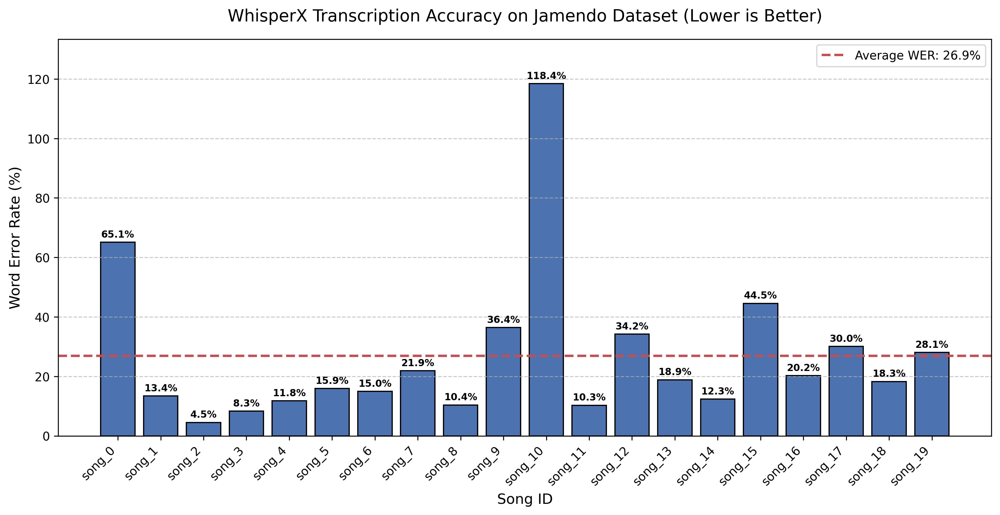

1. Raw Audio In
A user provides a song file that becomes the shared input to the full transcription pipeline.
Research Project Website
An automated audio-to-lead-sheet transcription pipeline that turns a raw song file into a synchronized chord chart musicians can actually use.
CS 352
Northwestern University
Professor Bryan Pardo
Synopsis
CoverBuddy is motivated by a simple gap in music learning. Many songs, especially indie tracks, new releases, and niche material, do not have reliable chord charts or lead sheets available online. That leaves musicians to transcribe entirely by ear, which is time-consuming and often discouraging. CoverBuddy aims to make that process more accessible by automatically generating a usable chart directly from audio.
At a high level, the pipeline takes a raw audio file, separates the vocal and instrumental content, transcribes lyrics with timestamps, estimates tempo and downbeats, recognizes chords, and then aligns everything onto a shared beat grid. The result is a synchronized lead-sheet style representation that can be exported as structured JSON, MusicXML, and PDF.
The system combines existing music and speech tools, including Demucs for source separation, WhisperX for lyric transcription, beat tracking for tempo and bar alignment, autochord for harmonic analysis, and music21 plus MuseScore for export. We evaluated the lyric transcription module on 20 songs from the Jamendo dataset using Word Error Rate, and we evaluated beat tracking on 93 annotated excerpts with event-based precision, recall, F-measure, and tempo accuracy metrics.
The current pipeline produces strong structural timing and promising lyric alignment. On Jamendo, the WhisperX large-v2 configuration achieved an average Word Error Rate of 26.89%, with several songs landing in the low-teens or single digits. For beat tracking, the system reached a mean F-measure of 95.1%, a tempo accuracy of 92.5% within 8%, and a mean absolute timing error of 10.6 ms. Together, those outputs are strong enough to generate readable lead sheets that serve as a practical starting point for musicians learning a song.
Pipeline
A user provides a song file that becomes the shared input to the full transcription pipeline.
Demucs isolates vocals, WhisperX transcribes lyrics, beat tracking finds tempo and bars, and autochord predicts harmonic changes.
Lyrics, beat locations, and chord changes are snapped onto a common metrical structure to make the output readable.
The synchronized chart is written to JSON, MusicXML, and a PDF lead sheet for downstream use by musicians.
Figure

Audio
Below is one of the Jamendo test tracks used as an input example, along with a preview of the synchronized chart structure and the PDF lead sheet CoverBuddy exports.
Sample input audio used to demonstrate the full CoverBuddy pipeline.
A short excerpt from the synchronized JSON output showing how lyrics and chords are aligned bar by bar.
{
"tempo_bpm": 103.36,
"beats_per_bar": 6,
"bars": [
{ "bar": 6, "chord": "F#m", "lyrics": "Yeah," },
{ "bar": 8, "chord": "A", "lyrics": "the don't stand" },
{ "bar": 9, "chord": "Bm", "lyrics": "over care So" }
]
}Output
CoverBuddy converts its synchronized representation into MusicXML and then renders a PDF lead sheet using MuseScore.
If the PDF preview does not load in your browser, open the sample PDF directly.